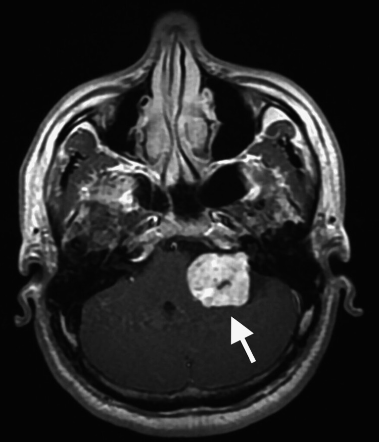
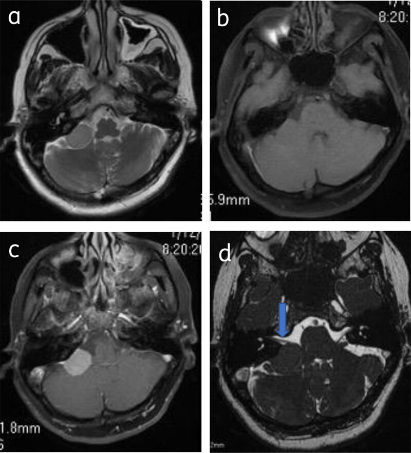
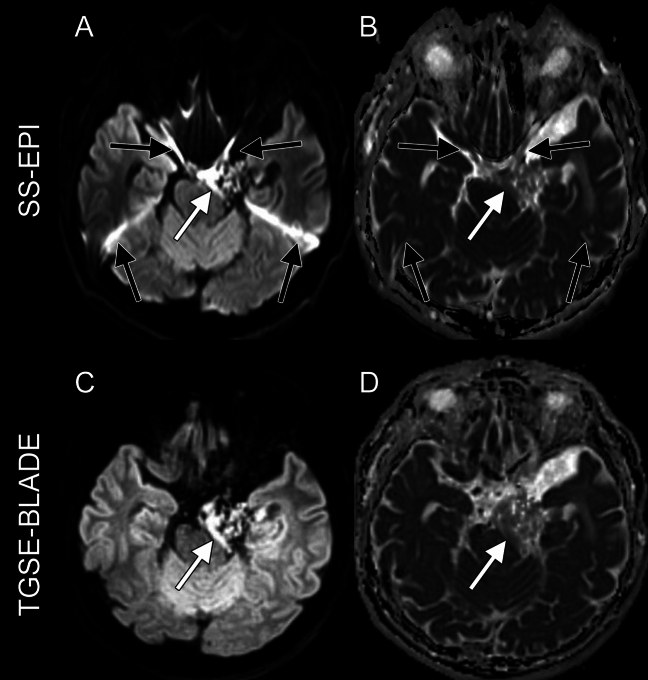
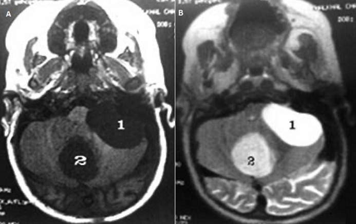
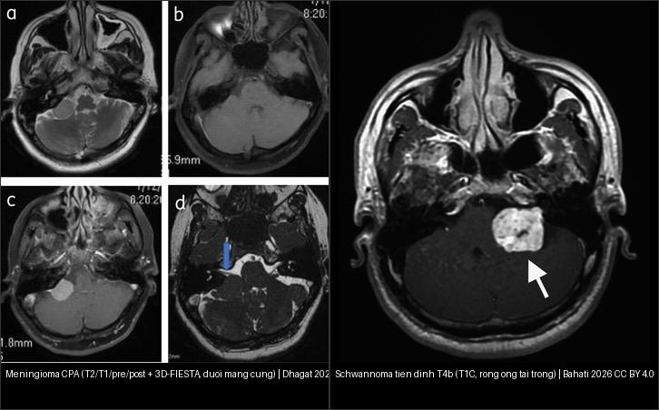

217 — Ngoài trục & góc cầu-tiểu não: meningioma, schwannoma, epidermoid / CPA tumors
Tags: pattern:ngoai-truc-CPA vung:nen-so
Mức chắc chắn (certainty): tổng hợp y văn (literature synthesis) — nhóm tự biên từ y văn mở, chưa gắn ca nguyên văn đơn lẻ.
1. Tổng quan — ngoài màng cứng đẩy não + khe dịch bao quanh
- Khối ngoài trục (extra-axial) nằm ngoài nhu mô, đẩy não vào trong — TẠI SAO có khe dịch não tủy (CSF cleft) + cuống màng (dural tail) + dày xương (hyperostosis): khối từ màng cứng, không từ não.
- U dây VIII (vestibular schwannoma) từ bao Schwann đoạn trong ống tai (IAC) — TẠI SAO rộng ống tai trong + điếc-ù một bên sớm: u nong ống xương từ trong ra.
- Nang thượng bì (epidermoid) từ tế bào sừng kẹt phôi — giống DNT mọi chuỗi xung nhưng DWI sáng (keratin đặc), khác nang màng nhện (arachnoid) DWI tối.
2. Gamut góc cầu-tiểu não (Gamut)
- Đuôi màng cứng + khe DNT + dày xương: Meningioma — mổ/SRS theo Simpson.
- Rộng ống tai trong + điếc-ù + T4 Hannover: Schwannoma VIII — theo dõi (< 20 mm) / SRS / mổ (giữ mặt VII).
- Giống DNT + DWI sáng rực: Epidermoid — mổ bóc (tái phát nếu sót vỏ).
- Giống DNT + DWI tối + không ngấm: Arachnoid cyst — bỏ qua (trừ chèn ép).
3. Bảng so sánh phân biệt (ma trận đối chiếu)
| Thực thể (entity) | Hình ảnh điển hình | Chốt vào (rule-in) | Chốt loại (rule-out) | Gợi ý xác nhận |
|---|---|---|---|---|
| Meningioma | Đuôi màng cứng + khe DNT + dày xương + ngấm đồng nhất | Đuôi + khe + xương | Rộng ống tai → schwannoma | SRS/mổ (Simpson) |
| Schwannoma VIII | Rộng ống tai trong + ICE + Hannover T1–T4b; 38 mm = T4b | Ống tai + điếc-ù một bên | Đuôi màng cứng → meningioma | SRS khi < 30 mm, mổ giữ VII |
| Epidermoid | Giống DNT + DWI sáng rực + viền festooned | DWI+ trong nang giống DNT | DWI tối → arachnoid | Mổ bóc vỏ (tránh viêm màng) |
| Arachnoid cyst | Giống DNT mọi xung + DWI tối + đè xương mỏng | DWI tối + không ngấm | DWI sáng → epidermoid | Bỏ qua, theo dõi |

Khối ngấm mạnh CPA trái 38,2 × 31,3 mm + não úng thủy tắc nghẽn + yên rỗng. Nguồn: Bahati et al., Cureus 2026 Fig. 1, CC BY 4.0.
Meningioma CPA phải: khối ngoài trục bám rộng nền màng cứng, ngấm đồng nhất + đuôi màng cứng, KHÔNG rộng ống tai trong; 3D-FIESTA thấy đè dây VII–VIII. Nguồn: Dhagat, J Belg Soc Radiol 2022 (PMC9053553) Fig. 5, CC BY 4.0.
Epidermoid (nang thượng bì) CPA trái: trên b1000 khối sáng rực (SS-EPI hàng trên: A; TGSE-BLADE hàng dưới: C) và ADC TỐI (B, D) — DWI là chốt phân biệt với nang màng nhện (DWI tối), dù cả hai giống dịch não tủy trên T1/T2. Nguồn: Otani S et al., Jpn J Radiol 2025 (PMC12053340) Fig. 1, CC BY 4.0.
Nang màng nhện CPA trái (nhãn 1): giảm tín hiệu T1 (A) + tăng tín hiệu T2 (B) = y hệt dịch não tủy, không ngấm (nhãn 2 là nang bì vùng giun tiểu não, DDx khác). Nguồn: Abbou Z et al., Pan Afr Med J 2021 (PMC8641637) Fig. 2, CC BY 4.0.
Trái: meningioma — đuôi màng cứng + bờ rộng nền, ống tai trong không rộng. Phải: schwannoma tiền đình — khối ngấm lớn từ ống tai trong ra, T4b. Ảnh ghép letterbox; nguồn Dhagat 2022 Fig. 5 (CC BY 4.0) + Bahati 2026 Fig. 1 (CC BY 4.0).4. Protocol
- MRI hố sau lát mỏng + T1C + DWI non-EPI + CISS/FIESTA (dây VII/VIII trong ống tai) + thính lực đồ.
- Hannover T1 (trong ống) → T4b (chèn thân não + não úng thủy) quyết định mổ/SRS.
flowchart TD
A[Khối CPA + điếc ù] --> B{Đuôi màng hay rộng ống tai?}
B -->|Đuôi + khe DNT| C[Meningioma]
B -->|Rộng ống tai| D[Schwannoma: SRS/mổ]
B -->|Giống DNT| E{DWI sáng hay tối?}
E -->|Sáng| F[Epidermoid: mổ]
E -->|Tối| G[Arachnoid: theo dõi]
5. Cạm bẫy
- Epidermoid sót vỏ tái phát + viêm màng vô khuẩn — bóc hết + corticoid.
- Mổ schwannoma lớn mất mặt VII (House-Brackmann III–VI) — SRS khi còn nhỏ + giám sát thần kinh trong mổ.
- Meningioma rãnh khứu giác lan nền sọ tưởng xoang — đuôi màng + xương là chốt (nối bài 432 vùng yên).
6. Tự lượng giá — Blind Quiz
Ca 1 — Điếc trái + loạng choạng + mù 2 bên muộn. Đọc T1C.
- Hỏi: khối ở đâu? Kích thước bao nhiêu? Hannover mấy? Vì sao mù?
Bấm để hiện đáp án
- Dấu hiệu (findings): khối ngấm CPA trái 38,2 × 31,3 mm chèn thân não + lệch não thất IV.
- Chẩn đoán (diagnosis): schwannoma tiền đình T4b — mù 2 bên do não úng thủy tắc nghẽn mạn + yên rỗng (không phải u chèn trực tiếp thị).
- Nguồn: Bahati et al., Fig. 1, CC BY 4.0.
Ca 2 — Nang CPA giống dịch não tủy, có DWI (hàng trên SS-EPI, hàng dưới TGSE-BLADE): dịch thật hay khối?
- Hỏi: trên b1000 khối sáng hay tối? ADC sáng hay tối? Kết luận là epidermoid hay nang màng nhện? Xử trí?
Bấm để hiện đáp án (findings + chẩn đoán)
- Dấu hiệu (findings): b1000 (A, C) sáng rực + ADC (B, D) tối trong nang ở CPA (mũi tên) — hạn chế khuếch tán, không phải dịch tự do.
- Chẩn đoán (diagnosis): epidermoid (nang thượng bì) — keratin đặc làm DWI sáng; nang màng nhện sẽ DWI TỐI (giống DNT mọi chuỗi xung).
- Xử trí: mổ bóc vỏ hết (sót vỏ → tái phát + viêm màng vô khuẩn).
- Nguồn ảnh: Otani S et al., Jpn J Radiol 2025 (PMC12053340) Fig. 1, CC BY 4.0.
Ca 3 — Khối CPA + điếc-ù một bên. So 2 ảnh bên dưới: đâu là meningioma, đâu là schwannoma? Chốt bằng gì?
- Hỏi: khối nào có đuôi màng cứng? Khối nào rộng ống tai trong? Vì sao phải phân biệt (khác xử trí)?
Bấm để hiện đáp án (findings + chẩn đoán)
- Dấu hiệu (findings): khối trái = meningioma (bám rộng nền màng cứng + đuôi màng cứng, ống tai trong không rộng); khối phải = schwannoma tiền đình (khối ngấm từ ống tai trong lan ra, T4b 38,2 mm).
- Vì sao phân biệt: meningioma → mổ/SRS theo Simpson (chú ý xoang tĩnh mạch, động mạch); schwannoma → SRS khi < 30 mm hoặc mổ giữ dây VII (nguy cơ liệt mặt House-Brackmann III–VI).
- Nguồn ảnh: Dhagat, J Belg Soc Radiol 2022 (PMC9053553) Fig. 5, CC BY 4.0.
- Nguồn ảnh (schwannoma T4b): Bahati et al., Cureus 2026 Fig. 1, CC BY 4.0.
Ca 4 — Khối CPA tín hiệu y hệt dịch não tủy trên T1/T2, không ngấm. Có cần mổ không?
- Hỏi: tín hiệu của khối giống gì? Phân biệt với epidermoid bằng chuỗi xung nào? Xử trí?
Bấm để hiện đáp án (findings + chẩn đoán)
- Dấu hiệu (findings): khối CPA trái (nhãn 1) giảm tín hiệu T1 (A) + tăng tín hiệu T2 (B) = y hệt DNT, bờ nhẵn, không ngấm — nang màng nhện bẩm sinh.
- Phân biệt: DWI tối (nang màng nhện) vs DWI sáng (epidermoid) — đây là câu chốt.
- Xử trí: theo dõi, không mổ trừ khi chèn ép gây triệu chứng (khác epidermoid phải mổ).
- Nguồn ảnh: Abbou Z et al., Pan Afr Med J 2021 (PMC8641637) Fig. 2, CC BY 4.0.
Bài liên quan chéo
- 200 – Tổng quan Thần kinh
- 432 – Vùng yên (meningioma nền sọ)
- 213 – U não (trong trục vs ngoài trục)
Không dùng để chẩn đoán độc lập khi chưa có người hướng dẫn.